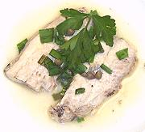

|
Mackerel in White Wine PickleEuro-American - maquereaux au vin blanc | ||||
| Makes: Effort: Sched: DoAhead: |
8 app *** 1-1/2 hrs Best |
This flavorful wine pickle is a perfect appetizer for those who love mackerel. Yumm. You can also serve it over mixed salad greens with the pickle serving as a dressing. It's best made a day ahead, but the pickle is mild so refrigerate and use within a couple of days. | |||
|
|
1-1/2 ------ 2 6 6 3 1 ------ 1/4 1/2 1 1/4 1/2 ------ 2 2 2 5 ------ |
# --- c oz oz oz cl --- t t t t --- c T T T --- |
Mackerel Filet (1) -- Vegetables Water Onion Fennel Bulb Carrot Garlic -- Spices Peppercorn, blk Mustard seeds Bay Leaf Chili, crushed Salt ---------- White Wine Chives Capers Lemon Juice --Garnish Chives Capers |
Make: - (1-1/2 hrs +overnight )
|